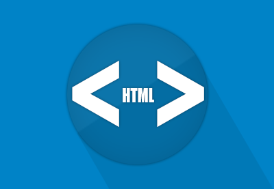
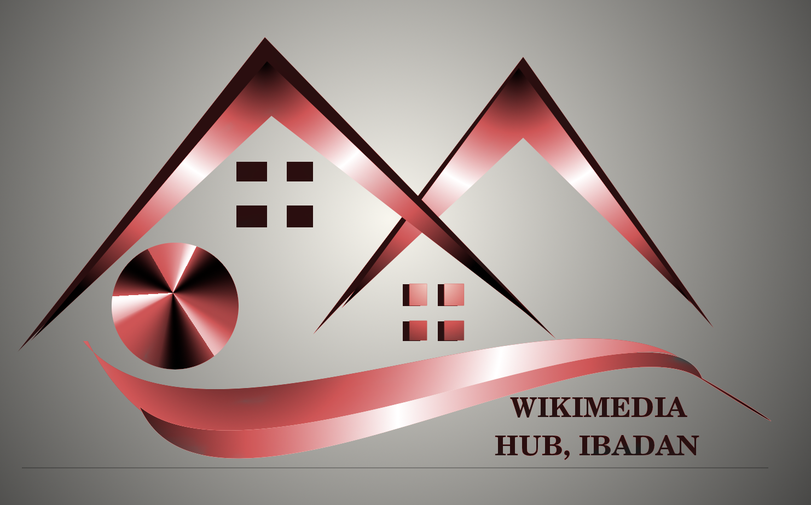
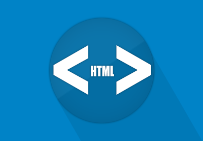
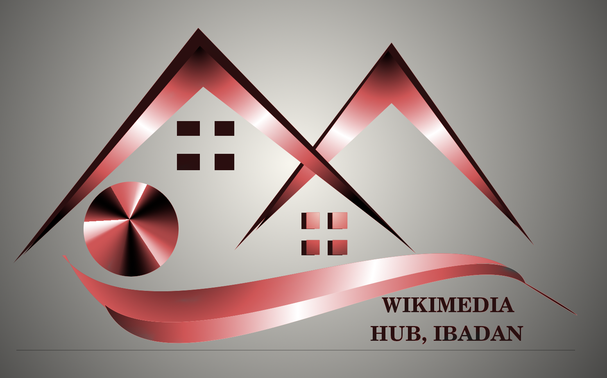

Wikimedia Hub, Ibadan
Join our community to learn the basics of contributing to the Wikimedia movement in Ibadan
Join now!Analytics
We teach you to evaluate your contributions. Is there a conflict of interest? Is it encyclopaedic?
Marketing
We provide step by step procedures on how to grow as a contributor.
Development
Effective followup and teamwork in becoming better informed with each edit.
Support
Whenever you need assistance, we're always glad to help.

Wikimedia Hubs and Wikimedia User Group Nigeria
Wikimedia Nigeria is the official affiliate of the Wikimedia Foundation in Nigeria. Our primary objective is to promote free access to knowledge through Wikipedia and other sisters projects run by the Wikimedia Foundation. We are committed to the development, growth and free distribution of educational contents in Nigeria. We empower people to contribute to Wikipedia and other sisters projects to ensure that knowledge are freely accessible . We share the ideal of a world in which every single human being can freely share in the sum of all knowledge, and here in Nigeria we play a key role in actualization of that vision.
Wikimedia Nigeria is committed to the ideal of a world in which every single human being can freely share in the sum of all knowledge and we believe that free access to knowledge is a fundamental right.Our mission is to support and promote free access to knowledge, work with volunteers across the country, partner with governmental and non-governmental organisations, cultural and educational sectors and other mission aligned groups to make knowledge available for free access.
Learn more
 


